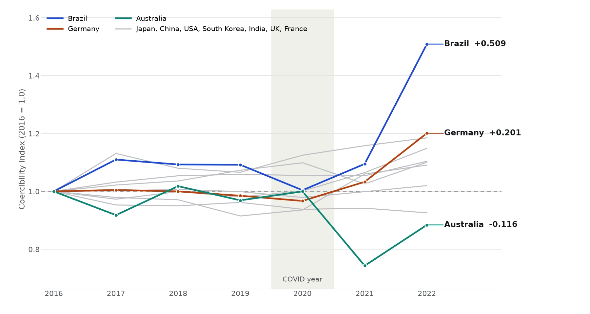
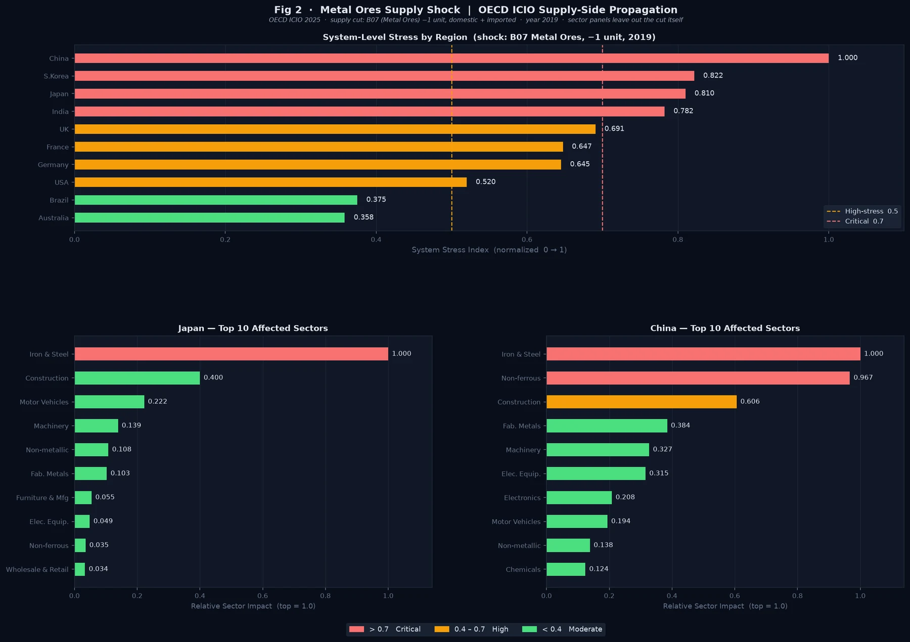
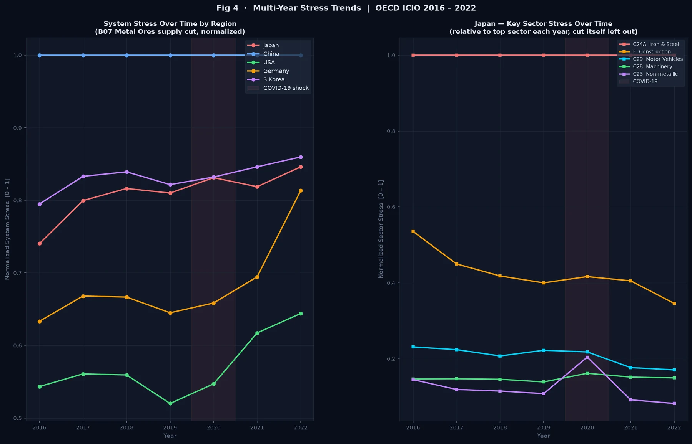

GTAP Trade Stress Model
A Python research pipeline for measuring how an economic shock spreads through global supply chains. It ran an input-output model, the math for how industries buy from each other, on two global databases.
- Role
- Undergraduate researcher
- Lab
- Financial Stress Lab, Northeastern
- Dates
- Phase 1, Jan–Jun 2026; model fix, Oct 2026
- Tools
- Python, numpy, xarray, netCDF, pandas, pytest
One metal-ore supply cut. How hard does it hit each economy?
Stress from my supply-side model, 2019. Hardest hit = 1.0
Summary
The model asked how a cut to one sector’s supply spreads to the industries that buy from it, and how exposed different economies are to the same cut. It ran on GTAP 10 and OECD ICIO input-output data. It included a case study of the 2010 rare-earths episode.
Problem
A supply cut in one place can ripple out through global supply chains. I needed to measure that ripple for any region, sector, and year, and to compare how exposed different economies were, for example Japan and China.
Design
- Two databases. GTAP 10 has 65 sectors and 141 regions, in snapshot years 2004 to 2014. OECD ICIO 2025 has 50 sectors and 81 economies, with annual tables for 2016 to 2022.
- Data engineering. I parsed GEMPACK HAR binaries, using the HARPY reader, and zipped ICIO CSVs. Both became domestic and imported intermediate flows and bilateral exports, which I stored as netCDF with xarray. The Armington substitution elasticities, which say how readily buyers swap an import for a domestic good, came from the GTAP parameter file.
- Stress metrics. The core is a trade-exposure tensor of 65 sectors by 141 exporters by 141 partners. On top of it sit partner-dependency weights and a Herfindahl-Hirschman index, which measures how concentrated a country’s imports are. Sector stress rolls up into system stress in two stages, and a final metric compares how vulnerable Japan and China are.
Once the GTAP pipeline was built, I wrote one new extractor and pointed the same downstream code at ICIO.
The math
Six formulas do the work in this project. For each one, here’s what it says in plain words and why I used it. The first, the Leontief matrix, is introduced on my SAM pipeline page.
1. The Leontief model, used in phase 1
Zij is what industry j buys from industry i, xj is industry j’s output, and f is final demand (households, government and exports).
In plain words. A is the Leontief matrix explained on my SAM pipeline page. It says how many cents of each input an industry needs for every dollar it makes. Here I ran L on it, adding up every round of buying, so Δx is the total change that follows a change in demand.
Why I used it. It’s the standard way to trace a change in one industry through a whole economy, and it runs directly on the input-output tables I had. In phase 1, x came from intermediate flows only, so A’s columns summed to about 1 and I added a tiny term (10−6) to invert it. That term later turned out to decide the results (see Testing).
2. The supply-side (Ghosh) model, used in the fix
si is the supply of product i, made at home (xi) or imported (mi), and Δv is the cut, here one unit of metal ore.
In plain words. B says where each dollar of a product’s supply goes. G follows a lost dollar forward, to the industries that buy it, then to their buyers, and so on.
Why I used it. A supply cut hits the industries that buy the cut product, so the model has to push the shock forward. Counting imports in s also lets it see economies like Germany that import all their ore. This is the October fix, written with Claude Code, and it inverts with no correction term.
3. The stress score
n is the 50 industries in the OECD tables, and c is one economy.
In plain words. The average size of the hit across all 50 industries, scaled so the hardest-hit economy reads 1.0.
Why I used it. One number per economy lets me compare the same cut across economies of very different sizes. It’s a ranking, not a forecast in dollars.
4. The Coercibility Index
θ is the share of an economy’s inputs that it buys from abroad, and t is the year.
In plain words. Stress, boosted by how much an economy relies on imports, and tracked against its own 2016 level.
Why I used it. Stress says how hard a cut hits, but not whether another country could use it as leverage. An economy that’s hit hard and relies on imports is easier to pressure than one that absorbs the cut at home.
5. Import concentration (Herfindahl-Hirschman index)
Xk is what an economy imports of one product from partner k.
In plain words. Square each supplier’s share of the imports and add them up. One supplier gives 1, and ten equal suppliers give 0.1.
Why I used it. Relying on one supplier is riskier than spreading purchases out, and this puts that risk in one number per sector. It’s the same measure regulators use to judge how concentrated a market is. I computed it from the trade-exposure tensor.
6. Armington elasticities
M is what a buyer purchases from supplier a or b, p is each supplier’s price, σM (GTAP’s ESUBM) is switching between import sources, and σD (ESUBD) is switching between imports and home-made goods.
In plain words. How strongly buyers move away from a supplier that gets more expensive. With σ = 2, a 1% price rise for one supplier cuts what buyers take from it, compared with the other, by about 2%.
Why I used it. It measures how easily a country could replace a lost supplier, which matters as much as the cut itself. I extracted both elasticities for all 65 GTAP sectors and checked that σD is half of σM, as GTAP sets it. The stress numbers don’t use them yet. Adding substitution is the next step.
Build
The case study was the 2010 rare-earths episode. I modeled it as a one-unit supply cut to GTAP’s oxt mining sector for 2011, and to OECD’s metal-ore sector B07 for 2019 and across the 2016 to 2022 series. Neither sector isolates rare earths, so both were proxies.
The pipeline produced a labeled multi-year dataset, technical-coefficient matrices and Leontief inverses for each region, and the shock-response and vulnerability metrics. It also came with a glossary and a guide to all nine figures (21 panels).
Testing and iteration
pytest tests covered how the dataset was built, the extraction checks, and parameter parsing. One extraction check, for example, made sure imports at world prices never exceeded imports at market prices.
- A zero that turned out to be a model limit. Germany and the UK showed zero stress under the metal-ore shock. When I traced it, their ICIO tables carried zero metal-ore output, because they mine almost no metal ore of their own. My model only cut a country’s own ore mining, so for them it had nothing to cut. They still depend on ore. In 2019 Germany used $7.9bn of it and the UK $1.5bn, all of it imported, and my model couldn’t see that.
- A ranking that didn’t depend on the shock. In October 2026 I went back over the model with Claude Code, an AI coding tool, and the review found two bigger problems. The shock ran backward, through the industries the ore mines buy from, when a supply cut really hits the industries that buy the ore. And the small correction term the Leontief inverse needed was big enough to decide the answer. Cutting food, IT or health care gave the same country ranking as cutting metal ore.
- The fix. Claude Code wrote a supply-side (Ghosh) version of the model on the full OECD tables. It uses real output, counts imported ore as part of supply, and needs no correction term. The math is now well behaved (condition numbers of about 3 to 6, against up to about 59,000 before), different cuts give different rankings, and Germany and the UK get real scores. My figures and my Coercibility Index were re-run with it, and new tests check all of this.
Results
- Shock-response and vulnerability metrics for any region, sector, and year
- One shared pipeline across two global databases
- Nine documented figures (21 panels)
Then I built a Coercibility Index. A single stress score says how hard a shock hits, but not why a country is vulnerable or whether that vulnerability could be used as leverage. My index starts from the same one-unit cut to metal-ore supply, runs it through each economy’s supply chain, and weights the result by how much of that economy’s inputs are imported. Each economy is scaled to its own 2016 value, so a line shows change over time, not size.


More detail: how the index is built
The base stress is the mean absolute change across all sectors when the supply of metal ores (OECD sector B07) drops by one unit, worked out through the supply-side model. Coercibility is that stress times one plus the economy’s import share, the part of its inputs bought from abroad. An economy that is both hit and import-dependent comes out more coercible than one that absorbs the same shock at home.
I also split the result into two parts. Import dependence is how much of the ore supply each sector buys directly. Network amplification is how much the supply chain multiplies the shock beyond that first round. The supply-side model assumes buyers keep their usual shares, so the index is best read as a direction of change and a ranking, not a forecast.
What I’d change
Known limits. In phase 1, output was approximated from intermediate flows only, so the columns of the coefficient matrix summed to about 1. That was true for 65 of 65 sectors in GTAP and 49 of 50 in the OECD Japan tables. The Leontief inverse needed a small regularization term, and it turned out to decide the results (see Testing). The October fix covers the OECD runs. The GTAP runs still use the old method and need the same fix. The supply-side model ranks exposure rather than forecasting it, because it assumes buyers keep their usual shares. The OECD Armington elasticities were only placeholder defaults.
These limits shaped my next project. The SAM pipeline starts from full tables that include value added and final demand, and it adds structural validation.
Gallery



